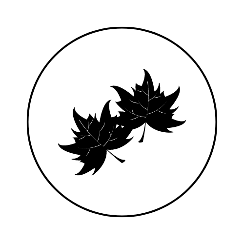

Portalegre
Capital do Alto Alentejo
Portalegre é considerado a capital do Alto-Alentejo, contendo em si um vasto aptrimónio histórico-cultural e natural. As ruas das diversas aldeias e vilas estão recheadas de vestígios do período medieval.
Parque Natural da Serra de São Mamede
O Parque Natural da Serra de São Mamede abrange um vasto conjunto de paisagens naturais, geosítios e infraestruturas que podem ser visitadas. Na tabela seguinte, pode encontrar as recomendações de atividades para cada época do ano.
| Natureza | Infraestruturas | Celebrações | |
Primavera |
Passear pelo parque | Castelo de Vide Igreja do Calvário |
Benção dos cordeiros (Sábado de Aleluia) |
Verão |
Barragem da Apartadura | Aldeias e vilas | Festival da Lavanda e Outras Aromáticas Andanças |
|  Outono |
Paisagem Nossa Senhora da Penha | Castelo do Marvão | Feira da Castanha de Marvão Romarias |
Inverno |
Pico de São Mamede | - | - |
Praias fluviais
Não dispondo, devido à sua localização geográfica, de praias costeiras, o distrito de Portalegre conta, no entanto, com um conjunto diversificado de praias fluviais. Em seguida, pode encontra uma curadoria de algumas das melhores praias fluviais deste distrito.
Enoturismo
O Alentejo é uma das regiões mais conhecidas no que diz respeito à produção de vinho, sendo estes reconhecidos internacionalmente pela sua qualidade.
Casa da Urra Herdade do Gamito Cabeças do Reguengo Falcon Land